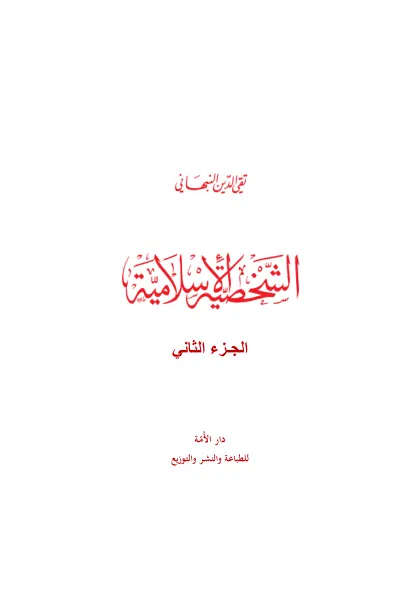

← Maktabah Ilmu · مكتبة العلم

Syekh Taqiyuddin an-Nabhani
الشخصية الإسلامية - الجزء الثاني
Asy-Syakhshiyah al-Islamiyah (Jilid 2)
Taqiyuddin an-Nabhani · wafat 1398 H
Tersedia: Arab, Indonesia · 357 halaman
Baca Asy-Syakhshiyah al-Islamiyah (Jilid 2) (الشخصية الإسلامية - الجزء الثاني) karya Taqiyuddin an-Nabhani secara gratis di Maktabah Ilmu: teks Arab, Indonesia. Tanpa daftar, tanpa iklan.
Buka kitab iniLihat lemari ilmu
Daftar isi
- المقدمة
- آيات الفتتاح
- محتويات الكتاب
- دراسة الفقه
- نماذج من الفقه
- الخـلافة
- الجهـاد
- أراضي العشر والخراج والصلح
- دار الكفر ودار الإسلام
- موقف الإسلام من الرق والاسترقاق
- العلاقات بين الأفراد
- البيع
- الإجارة
- الرشوة كلها حرام
- الـرهن
- المفلس
- الحـوالة
- التصـويـر
Sumber: hizb-ut-tahrir.org (PDF resmi)